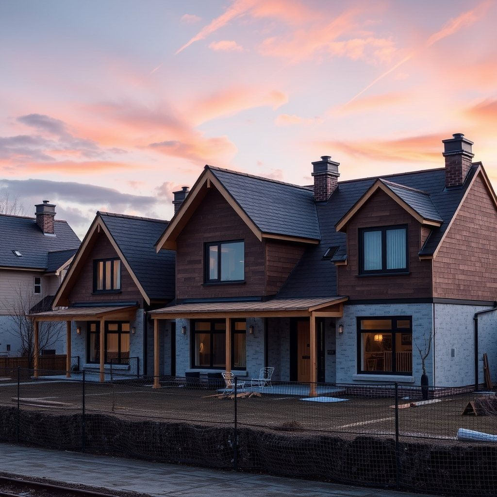

Accessory dwelling units for in-law suites, rental income or extra living space, built to fit your property and your budget.
- ADU Construction -
An accessory dwelling unit (ADU) is a secondary living space on your property, whether it's a converted interior space, an attached addition, or a detached backyard cottage. Recent Massachusetts zoning reform makes it easier for many homeowners to add an ADU by right, opening the door to more flexible living space for family, guests or rental income.
Get Free EstimateAn ADU can take different forms depending on your lot and goals. An interior conversion makes use of existing space such as a basement or attic. An attached addition connects a new unit to your home. A detached cottage stands alone in the backyard, offering the most privacy and flexibility. We help homeowners weigh space, budget and long-term use before choosing a direction.
Under recent state zoning reform, many single-family properties in Massachusetts can now build one ADU by right, generally up to 900 square feet or 50% of the primary home's size, without a special permit. Local requirements for setbacks, parking, utilities and site conditions still apply, so we recommend confirming the specifics with your town's building department before finalizing plans.
- What We Offer -
Give aging parents or family members a private, comfortable living space with its own entrance, while keeping everyone close to home.
A well-built ADU can create a source of rental income, adding long-term flexibility and value to your property.
From compact studios to full one-bedroom units, we build detached and attached structures designed to match your home.
- Recent Work -
Tap any photo to view the full gallery →
Planning a larger renovation too? Explore our carpentry and framing services, or see the towns we serve on our service area page, including Milford and Framingham.
- FAQ -
An ADU is a secondary living space on the same lot as a primary home, with its own kitchen, bathroom and entrance. It can be a converted interior space, an attached addition or a detached backyard structure.
Many single-family properties can now build one ADU by right under recent state zoning reform, without a special permit. Local rules on setbacks, parking and utilities still apply, so we confirm your property's specific requirements with the local building department.
Cost depends on the ADU type, size, site conditions and finishes. We provide a free, project-specific estimate after reviewing your property and goals.
Yes. Depending on your lot and goals, an ADU can be a conversion of existing space, an addition connected to your home, or a fully detached structure.
We guide homeowners through the process, from initial feasibility and design to permitting and construction, working within the applicable local requirements.
Tell us about your project and we'll get back to you within 24 hours.